20160405
> Tools / PCB Decal Editor
创建PCB封装(PCB Decal)
> Tools工具 / PCB Decal Editor封装编辑器
进入封装编辑器(Decal Editor)，字符 Name 和 Type 以及一个PCB 封装(PCB Decal)原点标记将出现。
Name 字符标号(Text Label)放在这里,代表一个元件(Part)的参考编号(Reference Designation)，对齐 : 水平 : 中 垂直 : 中 如 : U1、U2、U3...
Type 代表元件类型(Part Type) 对齐 : 水平 : 左 垂直 : 中
Name Type Value 都放在Top层
元件外框、丝印放到Top层,不要放在所有层和丝印层
丝印字体 0402、0603 元件尺寸为 :
字体 1mm / 40mil
线宽 0.15mm / 5.9mil
丝印字体 0805、1206 元件尺寸为 :
字体 2mm / 80mil
线宽 0.25mm / 10mil
> 绘图工具盒(Drafting Toolbar) / 添加端点(Add Terminal)
") 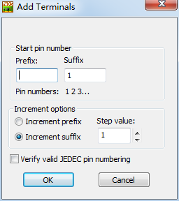
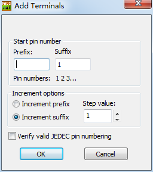
> Setup / 焊盘形状(Pad Stacks)
焊盘 Pad
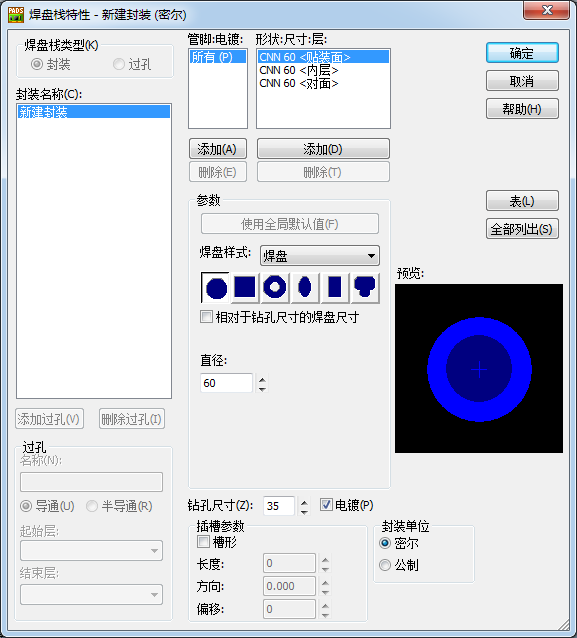
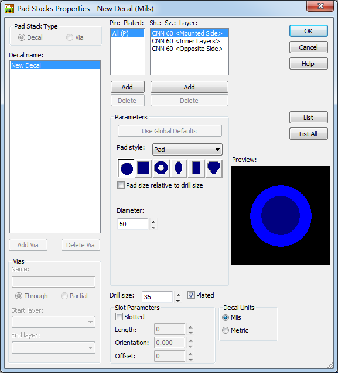
设置焊盘形状(Pad Shapes)和尺寸大小(Sizes)
手工调整焊盘(Pad)尺寸和钻孔尺寸(Drill size)
Pin : Plated : Pin后面加(P)表示电镀(Plated)
形状(Shape): 尺寸(Size): 所属层(Layer list box)
安装面、贴装面(Mounted Side)
中间层、内层(Inner Layers)
相对面、对面(Opposite Side)
形状(Shape)下面的三位字母 :
第一位字母表示"焊盘(Pad)"形状 C(圆形) S(方形) A(环形) O(椭圆形) R(矩形) D(异形)
第二位字母表示"热焊盘(Thermal)"形状 C(圆形) S(方形) N(无设置)
第三位字母表示"隔离焊盘(Antipad)"形状 C(圆形) S(方形) N(无设置)
焊盘样式(Pad style)分为 : "焊盘(Pad)" "热焊盘(Thermal)" "隔离焊盘(Antipad)"
"贴装面" 和 "对面" 可以设置 "焊盘(Pad)" "热焊盘(Thermal)"
"内层" 可以设置 "焊盘(Pad)" 和 "隔离焊盘(Antipad)"
圆形 :
直径(Diameter)
方形 :
尺寸(Size)
拐角类型(Corner type) :
90度(90 Degrees)
or 倒斜角 半径Radius :
or 圆角 半径Radius :
环形 :
直径(Diameter) :
内部直径(Inner Diam) :
椭圆形 :
宽度(Width) :
长度(Length) :
方向(Orientation)
偏移(Offset)
矩形 :
宽度(Width) :
长度(Length) :
方向(Orientation)
偏移(Offset)
拐角类型(Corner type) :
90度(90 Degrees)
or 倒斜角 半径Radius :
or 圆角 半径Radius :
异形 :
直径(Diameter)
相对于钻孔尺寸的焊盘尺寸(Pad size relative to size) : 勾选此项则表示 直径值会变为相对于钻孔尺寸的焊盘尺寸,而不是现实焊盘的真正直径
钻孔尺寸(Drill size)
电镀(Plated) : 它代表此焊盘孔的金属化选项，如果没有选中，则表面孔内壁不进行金属化处理，
这样各层之间的网络将无法连接在一起，在连通性检查时将会报告错误。
插槽参数(Slot Parameters)
槽形(Slotted)
长度(Length) :
方向(Orientation)
偏移(Offset)
例如 :
贴片焊盘
长方形 0.3*1.6mm 顶层焊盘
顶层阻焊 0.4*1.7mm Solder Mask Top 阻焊层 顶层绿油层
顶层助焊 0.2*1.5mm Paste Mask Top 助焊层 喷锡层
0.3*1.3
0.4*1.4
0.2*1.4
贴片焊盘
长方形 0.4 * 1.9 mm 顶层焊盘
顶层阻焊 0.5 * 2 Solder Mask Top 阻焊层 顶层绿油层
顶层助焊 0.3 *1.8 Paste Mask Top 助焊层 喷锡层
设置一样大
总结 : 做焊盘时要添加阻焊层(绿油层)和助焊层,阻焊层要做得比焊盘大一点,助焊层要做得比焊盘小一点
热焊盘(Thermal)
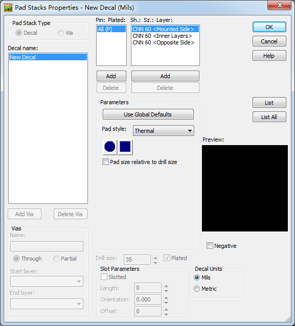
热焊盘(Thermal)圆形
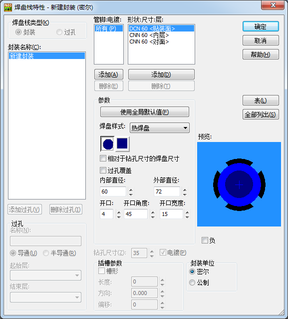
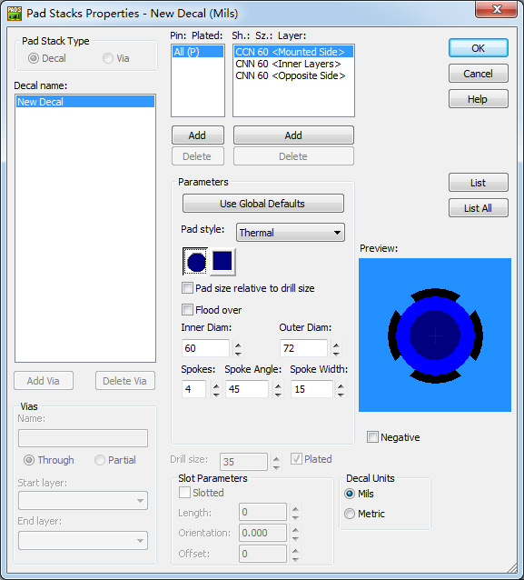
热焊盘(Thermal)方形
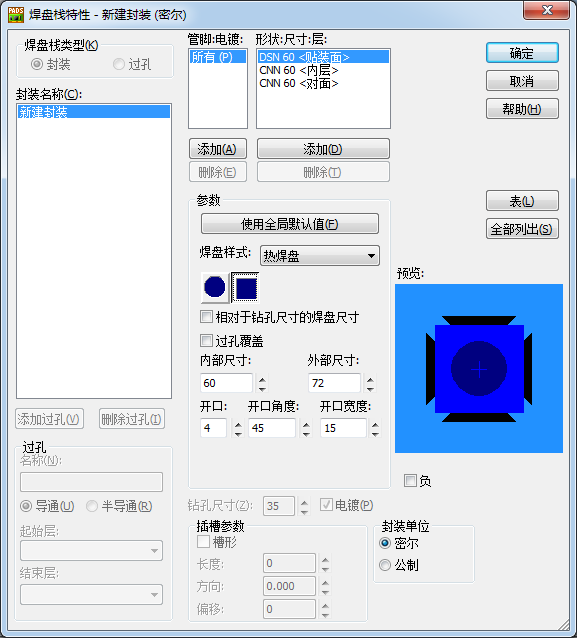
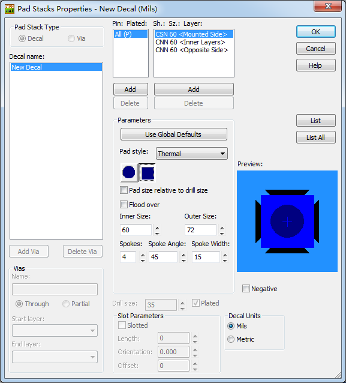
如果焊盘的钻孔没有显示，请输入无模命令do 进行切换显示。
建立元件外框(Component Outline)
元件的外框(Component Outline)是在PCB 封装中采用二维线(2D Line)建立的
> Drafting Toolbar / 2D Line / Right Menu / OK /
绘图特性(Drafting Properties)
2D Line
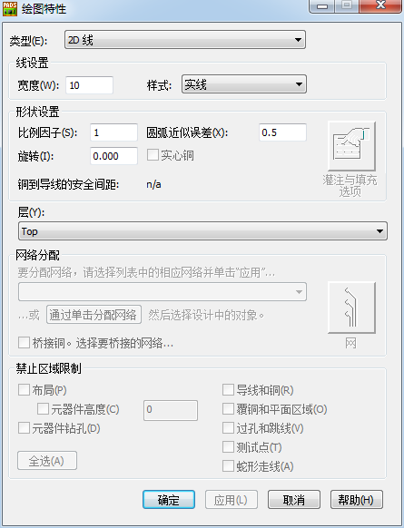
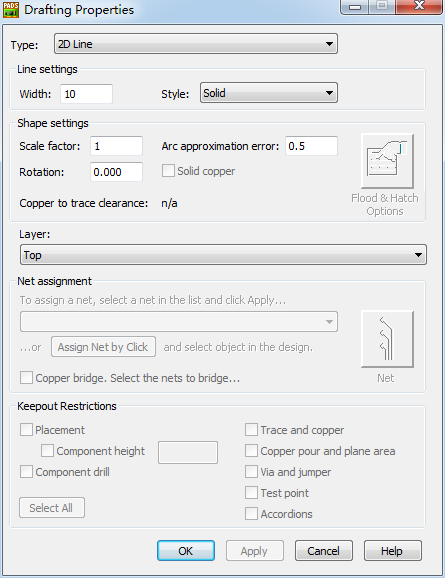
样式(Style) :
---- 实线(Solid)
---- 短划线(Dash)
---- 点(Dot)
---- 点划线(Dash dot)
---- 双点划线(Dash double-dot)
铜箔(Copper)
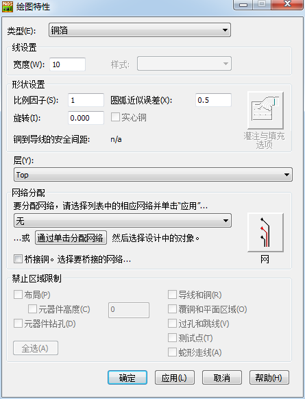
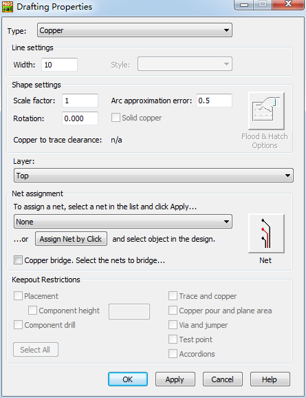
铜挖空区域(Copper Cut Out)
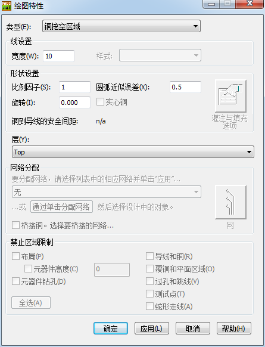
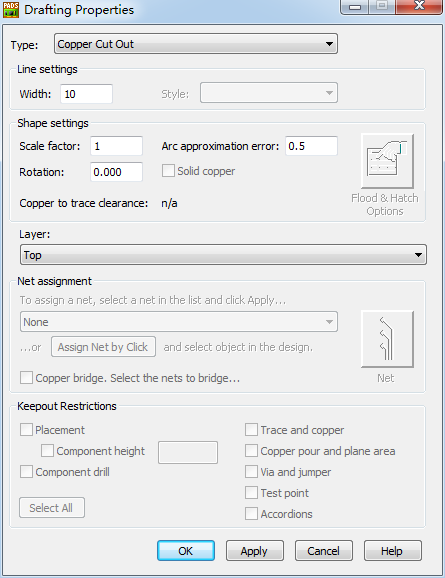
禁止区域(Keepout)
> Drafting Toolbar / Keepout / Add Drafting添加绘图 / Layer : All Layers /
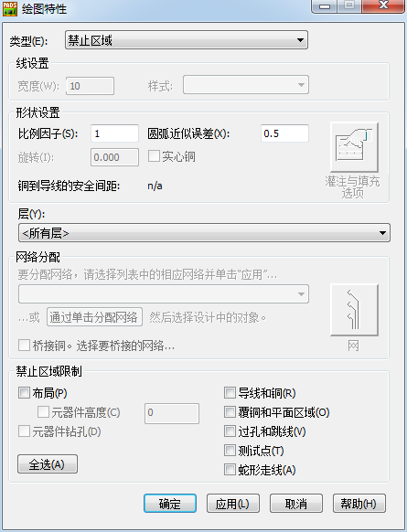
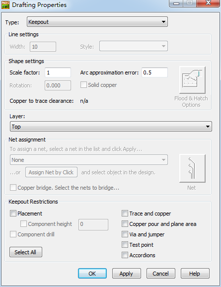
增加PCB 封装属性
例如:供应商元件编号、公司内部元件编号、元件高度以及其他元件信息
> Edit / 属性管理器(Attribute Manager) / 浏览库属性(Browse Library Attributes) / Value
增加设计参考符 : 增加一个装配层的参考符
> Drafting Toolbar / Add New Lable / 属性 : Ref.Des / 显示(Show) : 值(Value) / 层(Layer) : Assembly Drawing Top / OK /
绘制异形焊盘
> Drafting Toolbar / 添加端点(Add Terminal) /
/ Drafting Toolbar / 铜箔(Copper) /
/ 选择端点或铜箔形状(Select Terminal or Copper Shapes) / Associate 关联 / 选择铜箔形状或端点(Select Copper Shapes or Terminal) : 铜箔形状和端点合并/
通过导入 DXF 图形创建焊盘
> Drafting Toolbar / 导入DXF文件(Import DXF File) / DXF Import : DXF文件单位(DXF File Unit) / Add / 类型(Type) : 铜箔(Copper) / OK /
Decal Wizard 封装向导
> Drafting Toolbar / 向导(Wizard)
双列(Dual)
双列通孔(Dual Through hole)
双列(Dual SMD)
四侧引脚扁平封装(Quad Flat Package)
自动按IPC-7351标准计算所需要的焊盘大小,纵横行距及封闭名称
管脚(Pins)
宽度(Width) :
长度(Length) :
行距(Row pitch)
测量值类型 : 中心到中心(Center to Center) or 内边到边缘 or 外边到边缘
水平(Horizontal) :
垂直(Vertical) :
设定阻焊及助焊的大小
膜面放大(缩小)尺寸(Mask over(under)size)
阻焊层(Solder) : 0.1
粘贴(Paste) : -0.1
极座标(Polar)
极座标通孔(Polar Through hole)
极座标SMD(Polar SMD)
BGA/PGA
BGA通孔(BGA Through hole)
BGA SMD
电路板基准点(Board Fiducials) Mark点 制作方法
层(Layer) ---------------------- 形状 ---------- 尺寸 ---------- 注释
Top(Mounted) ---------------- Round ------- 40mil -------- Top Pad
阻焊层(Solder Mask Top) ----- Round ------- 80mil -------- Solder Mask to void
装配层(Assembly Top) -------- Round ------- 40mil -------- Assembly ref. image Top
Layer20 ----------------------- Circle -------- 80mil -------- Courtyard Outline
All Layer(Keepout) ----------- Round -------- 80mil -------- Component/Via/Routing
电路板安装孔(Board Mounting Holes) 螺丝孔
层(Layer) -------------------- 形状 ---------- 尺寸 ---------- 注释
Top(Mounted) -------------- Round ------- 280mil -------- Top Pad
Inner(Signal) ---------------- Round ------- 280mil -------- Inner Pad
Bottom(Opposite) ---------- Round ------- 280mil -------- Bottom Pad
阻焊层(Solder Mask Top) --- Round ------- 280mil -------- Solder Mask to void
阻焊层(Solder Mask Bottom) -- Round ----- 280mil -------- Solder Mask to void
装配层(Assembly Top) ------ Round ------- 280mil -------- Assembly ref. image Top
装配层(Assembly Bottom) ---- Round ------ 280mil -------- Assembly ref. image Bottom
Layer20 --------------------- Circle -------- 300mil -------- Courtyard Outline
All Layer(Drill Hole) --------- Round -------- 157mil -------- Plated hole
All Layer(Keepout) --------- Round -------- 320mil -------- Component/Via/Routing